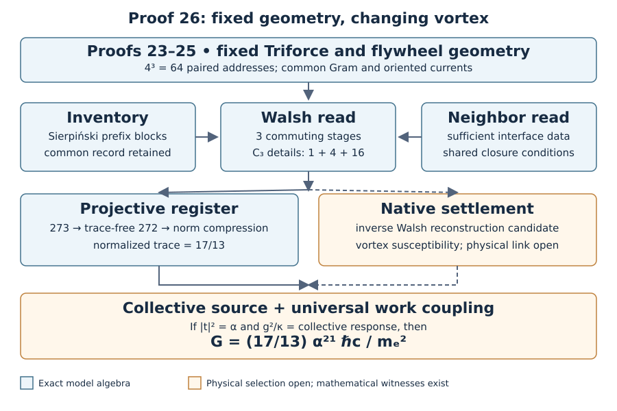

A mathematical witness with adjustable inputs; no physical gain or source selection is asserted.

At complete uniform filling the detail vanishes but the common inventory survives.
Set all gains to α (rounded slider) Set all gains to 1
The coefficient 17/13 is the inherited coupling-polynomial ratio; its physical selection remains open. Setting a gain is not a derivation.
Packing and Walsh read · Projective norm and Walsh filter · Native vortex response · Optional projective appendix explorer